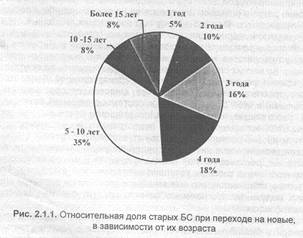
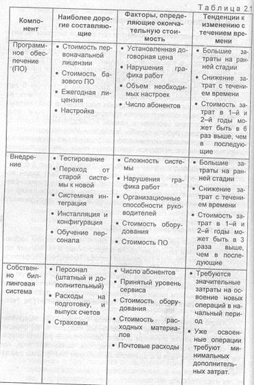
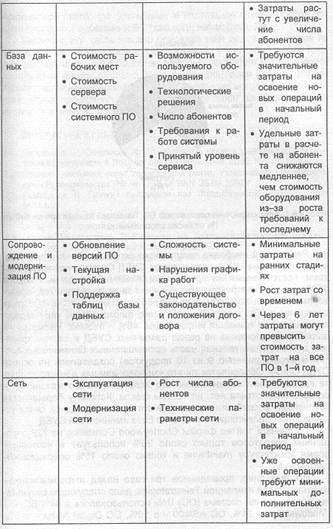
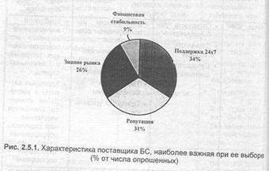

2. Выбор биллинговой системы: принятие решения
Бывают удачные браки, но не бывает браков упоительных
Ф. Ларошфуко
На форуме "Биллинг в системах сотовой связи" сайта www.sotovik.ru в январе 2001 года можно было прочесть следующий крик души (стиль, орфография и пунктуация сохранены):
«2.1.2001 А кто круче? Или все рекламщики? От: Саша (***** @hotmail.com)
Все больше и больше появляются компаний производящие биллинг системы. Но кто из них может занять достойное первое место по критерию, удобству, надежности и цене? Хотелось узнать отзывы людей, которые работают с биллинг и препайд системами, рассчитанными на 10000 абонентов и выше. А также узнать оценки. Привожу список компаний, которые производят биллинг системы...»
Подобный вопрос, поставленный в такой или в другой форме, вынужден время от времени решать для себя любой оператор связи. Будет ли он при этом писать письмо дедушке Константину Макарычу, использует компетенцию и здравый смысл своих сотрудников или обратиться за помощью к сторонним экспертам — дело вкуса. Заметив, что принятие решения об установке той или иной биллинговой системы может растягиваться на месяцы, попытаемся проанализировать те факторы, которые могут оказать на него влияние.
Наиболее жестким из них является необходимость следовать законодательным нормам: деятельность оператора сама по себе является сильно регламентированной, эксплуатация находящегося у него оборудования также не должна приводить к нарушениям законодательства, кроме того, нормированию могут подвергаться и функции, выполняемые этим оборудованием.
2.1. Нормативные документы, касающиеся биллинга
Прежде, чем говорить о системах. через которые производится оплата телекоммуникационных услуг, крайне желательно определить, что такое эти услуги, чем они измеряются и, вообще говоря, какие расходы связаны с их предоставлением [2.1].
В России основные услуги связи, которые могут получить клиенты оператора, определены документом [2.2]; в соответствии с ним к таковым отнесены предоставление доступа к телефонной сети, предоставление локального, междугороднего и международного соединения. Первая из этих услуг предполагает выделение совокупности определенных технических устройств, которые должны поддерживаться оператором (или абонентом и оператором вместе) в рабочем состоянии. Количественно она может измеряться в единицах установленных или применяемых абонентских терминалов (абонентских пар, линий и т.д.), себестоимость такой услуги измеряется расходами на создание и эксплуатацию упомянутых устройств и не зависит от интенсивности их использования.
При установлении соединения и совершении вызова в этот процесс вовлекаются дополнительные аппаратные элементы, являющиеся общими для многих абонентов. Общепринятой мерой такой услуги является продолжительность вызова, и ее себестоимость зависит от того, сколько и каких устройств подключается для ее предоставления, от стоимости их эксплуатации и организации технологического процесса.
Исследования по выработке методики повременного расчета с абонентами для телефонных сетей общего пользования велись с 1992 года в ЛОНИИС и были отражены в документе «Методика расчета тарифов на местные телефонные разговоры при повременной оплате». При этом предусматривалось два варианта оплаты услуг, оба из которых имеют фиксированную и переменную части.
Один из них предусматривает прямую оплату потребленных услуг, при которой фиксированная часть окупает предоставление доступа, а переменная погашает стоимость создаваемого абонентом трафика. При втором методе постоянная часть покрывает собой не только стоимость доступа, но и часть усредненного трафика, создаваемого всеми абонентами (практически, тем самым устанавливается некоторый лимит вызовов). Тогда переменная часть является оплатой трафика, пропущенного сверх лимита.
Отметим, что в сотовую телефонию методы работы с абонентами и методы расчетов с ними пришли вместе с самой технологией сотовой связи из тех стран, где она начала развиваться раньше. В силу природы мобильной связи эти методы в значительной степени являются глобализованными и сильнее зависят от международных нормативных документов.
Здесь стоит вспомнить, что телекоммуникации — это «открытое» поле деятельности, в которой могут принимать участие много сторон: оператор связи в месте инициации вызова, национальный транзитный оператор, транзитные операторы других стран, оператор локальной связи в пункте назначения вызова и т.д. Действия этих сторон должны быть согласованы; это касается, в частности, и расчетов за услуги связи. Международным Союзом Электросвязи (МСЭ или ITU) разработано большое количество документов серии "ITU Recommendation" регламентирующих основные функции систем расчета и способы реализации этих функций. Например, документы серии Е: E230 ("Chargeable duration of calls"); Е260 ("Basic technical problems concerning the measurement and recording of call duration"); Е501; Е528; Е1001 ("Definitions of terms used in international telephone operation") посвящены техническим аспектам расчета длительности соединения, регистрации вызовов при различных типах связи и определению оплачиваемой длительности связи абонентов, а описания основных принципов тарификации услуг мобильной связи и сценариев соединений приведены в рекомендациях серии D: D93 ("Charging and accounting in the international land mobile telephone service (provided via cellular radio systems)"; D.103, 72 ("Introduction of reduced rates during periods of light traffic in the international telephone service"); 0.110, 92 ("Charging and accounting for conference calls'); D174, 0176 (всего так или иначе вопросы биллинга затрагивают более 200 документов МСЭ).
Особую значимость вопросы нормирования процессов расчета приобретают при роуминге абонентов. В этом случае учетная информация образуется и может быть обработана только в той сети, в которой абонент находится и из которой он совершает вызовы. Пикантность данной ситуации состоит в том, что информацию о вызовах абонента одного оператора обрабатывает биллинговая система другого оператора. Понятно, что процедуры такой обработки должны быть регламентированы очень жестко, как в отношении самого процесса обработки, так и в отношении последующей передачи данных в «домашнюю» систему. Стандартизацией и установлением норм в этой области занимаются международные организации (ETSI, ITU, ассоциации операторов связи, использующих определенные стандарты связи).
Сейчас существует три группы международных стандартов и многие компании, разрабатывающие программное обеспечение для биллинга считают необходимым указывать, какие форматы обмена биллинговой информацией между операторами они поддерживают. В более выигрышном положении находятся операторы связи стандартов NMT-450 и GSM900/1800, поскольку используемые ими американский стандарт NAG TAP2 и европейские стандарты: TAP1, почти вышедший из употребления, TAP2, TAP2+ и, применяемый с 2000 г. TAP3, хорошо формализованы и довольно полно реализуют потребности в обмене данными, получаемыми на основе CDR со своих коммутаторов (TAP = Transferred Account Procedure. Аббревиатура заимствована из области банковских операций. В телекоммуникациях так называется метод оплаты, когда вызовы в «чужой» сети совершает визитер, но за пользование связью платит не сам визитер, а оператор, с которым у него заключен договор, который, в свою очередь, получает эти деньги с визитера.) Стандарты ТАР развиваются рабочей группой TADIG (Transferred Account Data Interchange Group).
Иное положение дел складывается для стандарта AMPS/ DAMPS. В России существует свой формат обмена информацией операторов между операторами этого стандарта [2.3]: до 1998 г. применялся DBF, а с мая 1998 г. используется принятый Ассоциацией — 800 DBF — М, и на ближайшее время полностью отвечающий потребностям. Стандарт GIBER (Cellular Intercarrier Billing Exchange Roamer Record) для AMPS/DAMPS и СОМА является собственностью корпорации GIBER, отражает, в основном, потребности американского рынка и стран, имеющих активный роуминг с США, но требует при этом лицензионной платы каждый год. Из-за неразвитых отношений роуминга между Россией и США российские операторы не используют GIBER. Существует также стандарт, созданный на основе стандарта ANSI 124 и протокола NSDP-B&S (Non — Signaling Data Protocol for Billing and Settlement), развиваемый рабочей группой TIA TR — 45.2.4, который регламентирует параметры обмена биллинговой информацией между коммутаторами различных моделей и разных производителей. Стандарт ANSI 124 определяет технические условия обмена информацией о потреблении услуг, а NSDP -— B&S (в определенной степени — расширение ANSI 124) описывает бизнес — процессы при обмене. Поддержкой протоколов NSDP -— B&S занимается организация CIBERNET.
Различие форматов данных, используемых операторами AMPS/DAMPS, GSM и NMT — 450 связано в первую очередь с различием в подходах к классификации услуг и их тарификации. Однако, некоторое сближение этих стандартов в последнее время все же наметилось.
Рекомендуемым способом расчетов между операторами является использование расчетов через клиринговые палаты (Clearing houses). В качестве примера можно назвать CEPT (Conference Europeenne des Postes et Telecommunications) или ROAMEO. Дело в том, что файлы с записями, которыми обмениваются операторы, далеко не всегда проверяются биллинговыми системами на достоверность по процедурам, описанным в стандартах (другими словами — проходят валидацию). Для таких проверок — довольно сложных — требуется специально е программное обеспечение. Но ошибки, неизбежные даже в системах с заслуженной репутацией, приводят к недовольству клиентов и задержкам взаиморасчетов. Именно по этому повсеместно решение таких задач поручается клиринговым палатам и тогда могут быть даже использованы кредиты, предоставляемы этими органами (с соответствующими процентами за их использование). Но, независимо от этого, операторы могут проводить взаиморасчеты на двухсторонней основе.
Следует учитывать также, что единообразные расчеты между операторами, работающими во многих государствах с различной валютой — дело весьма непростое. Здесь имеют значение и разные кросс — курсы валют, и различные темпы инфляции, и различная скорость обработки платежных документов, и другие обстоятельства. Для упрощения механизма расчетов применяются специальные расчетные денежные единицы, например SDR (Special Drawing Right). Помимо того, что курс такой денежной единицы по отношению к основным валютам определяется специальным образом, существуют еще и особые правила его применения, призванные сгладить последствия резких колебаний курса. Данные правила используются ассоциацией операторов и регламентируются стандартами. Продолжая пример, сошлемся на стандарт ВА.11, определяющий особенности применения курса SDR для расчетов у операторов стандарта GSM. Излишне упоминать, вероятно, что биллинговые системы обязаны поддерживать соответствующие алгоритмы.
К сожалению, в России такой важный механизм обмена биллинговой информацией между операторами пока отсутствует. Сейчас российские операторы даже при расчетах в рамках национального роуминга используют клиринговые палаты, находящиеся за рубежом. Однако, в настоящее время работы по организации российских клиринговых центров ведутся операторами всех стандартов (подробнее клиринг будет рассмотрен в главе 8).
Поскольку деятельность любого оператора, как уже говорилось, связана с предоставлением услуг, можно упомянуть, что в соответствии с рекомендацией RTR/NA 042102 (ETSI.ETR003, 1994 — ETSI technical report) процесс предоставления услуги включает в себя ряд элементов: продажа (заключение контракта), предоставление, поддержка, оплата, отмена услуги (если необходимо) [2.4]. Каждый из этих элементов характеризуется определенными показателями качества, понимаемого в соответствии с Рекомендацией Е.800 МСЭТ. Отсюда следует, что требования стандартов и других законодательных норм не могут не отражаться на процессах работы с потребителями и, как следствие, на работе биллинговых систем, функциональность которых, таким образом, также подлежит регламентации. В России функции, которые обязательно должны поддерживаться биллинговыми системами, установлены Общими Техническими Требованиям [2.5] (предполагается, что в 2002 — 2003 гг. вступит в силу новая редакция этого документа).
2.2. Что и как покупать?
Момент, когда операторы связи должны сформулировать для себя представления о том, какой должна быть их биллинговая система, кто должен являться ее разработчиком и поставщиком наступает неизбежно для любого из них.
Интересно, что при заказе биллинговых систем новые и уже давно работающие операторы связи используют разные подходы. Для только что появившегося оператора связи в условиях конкурентной борьбы основной проблемой является максимально возможное сокращение времени, протекающего от момента получения лицензии до начала коммерческой деятельности. Поэтому он не может позволить себе тратить время на собственную разработку биллинговой системы, без которой немыслимо его функционирование, и вынужден покупать уже готовую и покупать ее целиком. Последняя, зачастую, оказывается значительно дешевле системы, создаваемой собственными силами.
С другой стороны, как показывает опыт, большие и давно существующие компании связи часто не имеют возможности моментально разрушить уже отлаженную и действующую у них БС со своей инфраструктурой, в которую вкладывались большие средства в течение долгого времени, и заменить ее на новую, хотя бы и весьма привлекательную. В подобных случаях происходит поэтапный переход: задача модернизации разбивается на согласованные между собой стадии, очередность выполнения этих стадий выбираете на основе приоритетов компании и новая система внедряется помодульно. Во многих случаях эти модули можно покупать по отдельности, причем, разные модули — у разных производителей (более того, такая практика получает все более широкое распространение). Удобными, в этой связи, считаются системы с открытой архитектурой, работающие, например, с использованием операционной системы UNIX, которые можно гибко перестраивать и масштабировать (есть и другие решения). Существуют и критики открытых систем, утверждающие, что в них очень трудно получить ожидаемую (и, естественно, рекламируемую) экономию средств и что по производительности такие системы уступают системам типа mainframe. Тем не менее, отмечается, что повсеместное применение открытых систем и модульных программных пакетов следует считать свершившимся фактом.
В ряде случаев компании, не располагающие возможностью проводить биллинг самостоятельно, прибегают к услугам третьей стороны, которая имеет соответствующие ресурсы и оснащение. Такая практика (outsourcing) наиболее распространена в США, где к ней прибегают до 31 % операторов связи, тогда как в Европе эту возможность используют лишь 9 % операторов (данные 1999 г). Более привлекательным outsourcing представляется для вновь возникающих компаний, позволяя быстрее занять свое место на рынке и давая определенную экономию капиталовложений. Возможна и такая форма outsourcingа большая компания является ASP (Application Service Provider). Ей отправляются на тарификацию CDR с коммутатора оператора связи, а плата за такую услугу берется пропорционально количеству обработанных CDR. Оборот в этом сегменте рынка довольно быстро растет: если на Западе в 1998 г. по данным компании IDC он составлял $150 млн., то ожидается, что к 2003 г. он составит $2 млрд.
Важным аспектом, связанным с обострившейся конкуренцией, является относительно быстрое моральное устаревание биллинговых систем. Системы созданные несколько лет назад сегодня уже начинают отставать от требований рынка. По данным фирмы Chorleywood Consulting почти половина (49%) биллинговых систем меняется в течение первых 4 лет эксплуатации и 84% — в течение первых 10 лет [2.3]. Считается, что средний срок службы биллинговой системы составляет, на сегодня, 5 — 6 лет (рис. 2.1.1).

Из приведенных цифр и диаграммы становиться понятно, что процесс выбора системы — это не разовая акция, которою оператор, перекрестившись, предпринимает единственный раз в своей истории. Работа с биллинговой системой — это непрерывная ее модернизация, в рамках которой вырастает постепенное понимание того, каким должен быть следующий шаг.
Развитие информационных технологий и появление новых, конкурирующих между собой вариантов программных продуктов, заставляют потребителей формулировать требования к ним все более и более отчетливо. Разные потребности операторов связи в биллинге и различные подходы к нему выливаются в новые требования к производителям биллинговых систем и в практически не прекращающееся изменение их функциональности. Но независимо от различий современные биллинговые системы должны удовлетворять некоторым общим критериям, отражающим наиболее общие тенденции развития отрасли, которые справедливы почти для всех телекоммуникационных компаний.
В качестве первого из них в условиях весьма динамично меняющегося внешнего мира можно назвать масштабируемость (в самом широком смысле этого слова). Покупная или самостоятельно разработанная система должна обеспечить быстрый старт для начинающего оператора связи, предоставляя при этом конкурентные преимущества на жестоком рынке услуг связи за счет гибкой работы с абонентами, гибкой тарифной политики отдела маркетинга и оперативной обработки учетной информации. Как показывает российский опыт, начинающий оператор может на первых порах даже не иметь собственного коммутатора. Одновременно система должна обеспечивать:
• возможность сохранения инвестиций при плавном росте абонентской базы (говоря попросту, это означает, что, заплатив деньги, систему не надо будет выкидывать при достижении определенного числа абонентов и покупать другую)
• безболезненный процесс смены платформы при расширении
абонентской базы
• способность взаимодействовать с заданным количеством дилеров, филиалов и провайдеров.
Следует также учитывать, что тенденции и динамика развития современных рыночных отношений заставляют создавать приложения, обеспечивающие прямое взаимодействие абонентов компании с некоторыми компонентами биллинговой системы. Это, в частности, необходимо для того, чтобы абонент имел возможность самостоятельного управления состоянием своих услуг. Создание подобных приложений невозможно (или весьма трудоемко) в классических технологий разработки программных продуктов, так как требует интегрированного решения с применением полного спектра различных способов передачи информации (таких как компьютерная телефония, использование доступа в Интернет, передача SMS сообщений).
Для любой программной системы должны существовать и быть явно определенными свойства, инвариантные к тем бизнес-процессам, которые она обслуживает. Для биллинговых систем такие свойства перечислены ниже.
Скорость возврата инвестиций. Шиллинговая система является элементом инфраструктуры оператора, требующим значительных начальных затрат. Эти затраты неизбежны, поскольку без такой системы оператор просто не может функционировать. Поэтому для телекоммуникационных компаниям представляют интерес системы с низкой стоимостью сопровождения, большой глубиной наращивания производительности и функциональности, а также с возможностью простого перехода на более продвинутые версии программного продукта — т.е. такие, которые не требуют значительных дополнительных затрат, связанных с переделкой при своей эксплуатации. Мы коснемся этого пункта отдельно в разделе 2.5, а здесь отметим, что в настоящее время средняя стоимость выставления одного счета может колебаться в пределах $1 — 8.
Надежность. Временная остановка биллинговой системы это задержка финансового потока, идущего в компанию как минимум на тот же срок. Потеря данных в биллинговой система — это потеря всех еще не полученных средств и сведений об источниках пополнения средств (клиентах).
Производительность. Система должна успевать обрабатывать все потоки информации, в нее поступающие и выполнять все требуемые автоматические операции (подключать/отключать услуги, печатать счета и пр.) Важным аспектом является опыт поставщика в увеличении производительности системы при росте оператора и при изменении технологии его работы.
Консолидированный биллинг. От системы требуется не только выпускать единый счет клиенту компании, который пользуется одновременно услугами связи нескольких видов или разных стандартов, но и обладать возможностью предоставлять т.н. «перекрестные скидки». Это означает:
• сведение в единый документ всех начислений за услуги, учетные записи, о которых поступают в систему от различного оборудования (например, с коммутатора фиксированной связи и коммутатора GSM);
• возможность расчета скидок на услуги одного стандарта за использование услуг другого (например, при использовании более 300 мин. эфирного времени в стандарте GSM, предоставляется 50 % скидка на локальные вызовы в фиксированной связи).
При выборе системы необходимо ясно представлять о какой консолидации идет речь и к каким последствиям может привести предлагаемое техническое решение. Часто бывает удобно в рамках реализуемой идеологии в системе разделять понятия клиент и абонент. Клиент — это лицо, с которым заключается договор, которое платит деньги и получает счета. Абонент — это лицо, получающее услуги связи. Один клиент может иметь несколько абонентов. Вся специфика стандартов в этом случае может быть вынесена и реализована на уровне абонента, таким образом, у одного клиента могут быть абоненты, работающие в различных стандартах. При этом ведется единый лицевой счет клиента и формируется единый счет за услуги связи по всем стандартам.
Многоплатформенность и переносимость. Политика дистрибуции оборудования и его сопровождения может различаться в зависимости от регионов. Существуют регионы, в которых отдельные производители имеют традиционно высокий рейтинг, связанный с качеством предоставляемых услуг и это может заставить оператора отдать предпочтение определенному поставщику определенного аппаратного решения. В этих условиях работа биллинговой системы не должна зависеть от выбора аппаратной платформы; это создает большие преимущества при ее инсталляции. В условиях быстрого роста количества абонентов в телекоммуникационных компаниях система должна обладать способностью к наращиванию мощности, связанной с увеличением количества обрабатываемых данных, ростом численности персонала, работающего с системой, сменой аппаратной платформы и т.д.
Использование тиражируемых решений позволяет оператору использовать уже проверенные решения и опыт, накопленный поставщиком системы при ранних инсталляциях, а также получать обновленные версии системы, уже отработанные у других операторов.
Многовалютность. Под этим понимается способность системы тарифицировать услуги в одних единицах, а выставлять счета за услуги — в других. Утилитарное назначение этого свойства — демпфирование последствий инфляции. Но часто возникает также
потребность выставления счетов одновременно в разных валютах для разных категорий клиентов. В большинстве случаев многовалютность трактуется лишь в узком смысле — как способность выставлять счет в нескольких валютах. Однако в большинстве крупных компаний потребности многовалютности значительно шире — необходимо использование специальных алгоритмов, обеспечивающих баланс по любой используемой валюте в условиях значительных колебаний кросс курсов в течение отчетного периода. Очень важным является соответствие алгоритмов многовалютности требованиям бухгалтерского и финансового учета в плане выпуска счетов-фактур и т.д.
Многоязычность. Это свойство обычно диктуется особенностями национального законодательства и возможными потребностями учредителей компании связи. Они особенно ощутимы в странах СНГ, где традиционно помимо русского (исторические особенности развития государства) и английского (требования учредителей) могут возникать дополнительно от 2 до 4 национальных языков. Выбирая биллинговую систему, желательно проверить языковые возможности системы по трем направлениям:
1. Оконные графические рабочие интерфейсы системы.
2. Отчеты и другие внутренние документы.
3. Форматы счетов, выпускаемых системой в адрес абонентов.
4. Кроме того: локализация справочников БД, локализация
средств установки ПО, локализация документации, локализация сообщений об ошибках и протоколов.
on-line связь с:
• коммутатором;
• системой авторизации;
• системами предоставления дополнительных услуг.
Здесь, видимо, не нужны развернутые комментарии, поскольку только в этом случае система действительно может значительно увеличить степень автоматизации работ на предприятии связи.
Возможность одновременной работы в нескольких часовых поясах. В том случае, когда оператор предоставляет услуги связи на большой территории (например, если он имеет лицензию на оказание услуг сотовой связи на территории большой республики), может возникнуть проблема организации централизованного биллинга для областей, охватывающих несколько часовых поясов. Возможность работы в нескольких часовых поясах (и настройка системы на такой режим в будущем) является еще одним параметром масштабируемости системы.
Возможность работы с несколькими коммутаторами также является дополнительной важной характеристикой масштабируемости предлагаемого продукта. Крайне желательно принимать решения о выборе системы после того, как решены вопросы организации работы с коммутаторами. Предпочтителен вариант, при котором система в состоянии поддерживать работу с коммутаторами различных производителей при различных комплектах поставок оборудования и в разных стандартах сотовой связи. С каждым коммутатором может быть связан собственный набор услуг и свое подмножество абонентов. Разделение коммутаторов может быть в явном виде отражено при разметке номерной емкости в виде предварительно зарегистрированных в системе диапазонов номеров.
Возможность работы в нескольких городах связана с предоставлением услуг связи на большой территории охвата и в большинстве случаев означает оказание таких услуг в разных населенных пунктах. Каждый из них может иметь свои особенности (разные типы коммутаторов, разные префиксы номеров, разные правила проведения взаиморасчетов с местными провайдерами международной и междугородной связи, местных дилеров и т.д.). Таким образом, распределенная система, обеспечивающая сбор информации с нескольких географических регионов, является принципиально более сложной по сравнению с простой системой, выполняющей выпуск счетов лишь для абонентов одного города.
«Горячий» (псевдогорячий) биллинг. Возможность тарификации услуг практически в реальном масштабе времени и немедленный перенос стоимости услуги на баланс абонента. Такая возможность при обеспечении соответствующего интерфейса с коммутатором дает возможность управлять услугами абонента практически в темпе поступления учетных записей от коммутатора.
Организация биллинговых групп им гибкая организация биллинговых циклов. Рост количества клиентов в сети оператора связи требует определенной производительности для обеспечения разумного времени проведения биллинговых операций и выпуска счетов. Существуют различные способы повышения производительности, например:
• Увеличение мощности аппаратной платформы.
• Распараллеливание процесса биллинга за счет одновременного запуска нескольких биллинговых процессов для разных групп клиентов.
• Разнесение процесса биллинга между разными группами клиентов во времени.
Независимо от принимаемого организационного решения система должна обеспечивать принципиальную возможность маневра в этой области. Например, система может поддерживать проведение общего ежемесячного биллингового цикла по всем клиенты или только по выделенной совокупности клиентов.
Возможность проведения взаиморасчетов с несколькими провайдерами связи. Поскольку оператор неизбежно пользуется каналами связи других операторов для маршрутизации вызовов, то система должна поддерживать возможность расчета со всеми такими партнерами.
Возможность работы с вынесенным оператором. Поскольку, как было сказано выше, начинающий оператор может не иметь собственного коммутатора, то система должна поддерживать деятельность оператора («координирующего» оператора), сдающего часть коммутатора в аренду и обеспечивать возможность расчетов с т.н. «вынесенным» оператором, использующим такой коммутатор. Существуют примеры работы экземпляров одной и той биллинговой системы как у координирующего, так и у вынесенного операторов.
Перечисленные параметры практически не затрагивают конкретной технологии работы оператора, но они позволяют оценить гибкость системы и возможности ее параллельного развития вместе с развитием компании, предоставляющей услуги связи.
Следует учитывать и то обстоятельство, что многие компании, уже имеющие в эксплуатации биллинговую систему при выборе новой продолжают ориентироваться, в силу привычки, на технологию, поддерживаемую старой, не всегда отдавая себе отчет в том, что эта технология является лишь результатом ограниченных возможностей устаревшего оборудования и программного обеспечения.
Эксперты полагают [2.7], что существует ряд обязательных качеств, которыми в той или иной степени обязательно должна обладать любая современная биллинговая система.
Обслуживание клиентов. Должны быть обеспечены все функции поддержки отношений с клиентами, включая первый контакт, регистрацию клиента, обработку заявок и пр. Вся информация должна вводиться только один раз. Должна быть обеспечена возможность управления услугами, тарифными планами, скидками и льготами. Для технологических цепочек важным является то, как много раз одна и та же информация обрабатывается разными людьми, как много действий требуется совершить для завершения технологической операции, может ли быть информация о клиенте (предполагаемом клиенте) взята в системе из других источников (например, из модуля поддержки службы телемаркетинга). Важно, насколько тонко может быть произведено сегментирование рынка (географически, по роду бизнеса и пр.) для дифференциации отношений с клиентами.
Сбор учетных записей. Следует обращать внимание на надежность всей цепочки, по которой учетная информация поступает в систему. Важным является то, насколько быстро информация попадает в систему (latency period), насколько быстро она становится доступна для fraud-контроля или биллинга, позволяет ли система проводить анализ потребления трафика.
Работа с тарифными планами. Важно время, которое требуется на создание тарифного плана со всеми его ценовыми компонентами. Особенна существенна возможность описывать в тарифном плане исключения из правил при расчете стоимости вызова или размера скидки. Крайне желательно, чтобы составление тарифных планов не требовало работы программиста, кроме того, должна существовать возможность тестирования новых планов до ввода их в действие. Доступ к информации о тарифных планах должен быть ограничен.
Биллинг. Информация, относящаяся к расчетам с клиентами должна быть доступна сотрудникам отдела обслуживания в любое время, должна существовать возможность проводить биллинг по расписанию.
Процесс выбора биллинговой системы нередко образно cpавнивают с выбором между яблоком или апельсином. Часть фирм— поставщиков ВСС занимает определенные ниши, рассчитанные на разработку конкретных продуктов (например, ВСС только для мобильной связи, только для Интернет или ВСС только для электронного биллинга). Не существует ни одной биллинговой системы, которая превосходила бы все остальные во всех отношениях. И в любом случае условия тарификации, которые должны поддерживаться системой всегда являются индивидуальной особенностью оператора связи. Считается, что наиболее сильное влияние на выбор биллинговой системы оказывает принятая оператором связи стратегия развития и, в еще большей степени, эффективность реализации этой стратегии.
Поскольку ряд компаний считает возможным объяснить мотивы, которыми они руководствовались при выборе биллинговой системы и обнародовать алгоритм перехода на новую систему, мы можем проиллюстрировать подход к выбору системы примерами. Ниже перечислены соображения, которые принимались во внимание компанией Deutsche Telecom при смене биллинговой системы [2.8].
Возможные способы перехода на новую биллинговую систему:
Рассматривались следующие предложения:
1. Применение готовой биллинговой системы из числа предлагаемых на рынке.
2.Заказ разработки специальной «под оператора» биллинговой системы.
3.Доработка и улучшение уже работающей системы.
4. Разработка собственной биллинговой системы силами оператора.
С учетом сильной конкуренции на рынке услуг связи наибольшее значение принимает фактор времени, затраченного на переход с одной биллинговой системы на другую. Наиболее привлекательным вариантом считается заказ законченного программного продукта «под ключ». Был выбран первый вариант.
При оценке стоимости работ учитывались следующие обстоятельства:
• Для развертывания системы должна быть приглашена компания, занимающаяся системной интеграцией. Договор на системную интеграцию должен оговаривать фиксированную стоимость работ.
• С целью экономии почтовых расходов в биллинговой системе должна быть обеспечена возможность выставления «суммарного» счета по всем видам услуг.
• Желательно, чтобы подобная система уже использовалась другим оператором связи — это позволит оценить затраты на ее эксплуатацию.
• Единый комплексный подход к решению всех задач позволит снизить затраты по сравнению с системой, собранной из «разношерстных» кусков.
Подход к внедрению и эксплуатации:
Был принят следующий план перехода:
• Последовательное использование версий программного продукта.
• Новая версия каждые три месяца.
• Поэтапная и последовательная замена старой системы (или интеграция с ней).
• Подключение к новой системе сначала телефонов ISDN, затем обычных абонентов, затем транков и линий, сдаваемых в аренду.
• Параллельное внедрение новых тарифов.
Поскольку система устанавливалась не «с нуля», значительное внимание было уделено сохранности данных, накопленных в старой системе. При этом предусматривалось:
• Моделирование каждого шага при портировании.
• Разделение данных на «порции» при сортировании.
• Массовое портирование данных только после того, как новая система, проходящая стадию опытной эксплуатации в выделенном подразделении оператора, достигла в своей работе удовлетворительного уровня стабильности.
Другие соображения, используемые при выборе:
Дополнительно учитывалось:
• Возможность применения для большого количества абонентов.
• Возможность быстрой инсталляции новых дополнительных программных модулей и быстрого перехода с одних тарифных планов на другие.
• Система уже должна завоевать достойную репутацию на конкурентном рынке.
• Должна быть обеспечена совместимость с установленной ранее ВСС и преемственность по отношению к ней.
• Возможность последующей сертификации и периодического аудита.
• Защищенность сети.
• Возможность работы с большим количеством категорий абонентов.
• Нельзя недооценивать трудностей, связанных с внедрением новой системы в уже существующую структуру. Может потребоваться «реинжениринг» — т. е. изменение организационной структуры оператора связи.
• Должно быть уделено значительное время точному определению задач, которые будут поставлены перед новой системой и моделированию ее работы.
• Необходима одновременная проработка деталей, связанных с разработкой требований к системе и деталей, связанных с ее последующим внедрением.
• Стадия предварительного изучения и стратегического планирования длилась в компании Deutsche Telecom около 1 года.
• Рассматривались варианты: установка двух биллинговых систем для юридических и физических лиц по отдельности или установка единой системы. Был выбран последний из них.
Из опыта других компаний:
• Работы целесообразно начинать с разработки/установки модуля тарификации, затем подключать модуль генерации счетов и затем уже заниматься работой с модулями, предназначенными для традиционной работы с клиентами.
• Внедрение новой системы затрагивает каждый отдел компании-оператора и, в то же время, каждый отдел сопротивляется ее внедрению.
• Основными техническими моментами, которым уделяют внимание заказчики биллинговых систем, при их развертывании являются следующие: сетевой интерфейс, пользовательский интерфейс, интерфейс с партнерами, тестирование (на него рекомендуется отводить до 40 % от общего времени, затраченного на развертывание системы).
• Требование, заключающееся в том, что система должна делать абсолютно все, что от нее может захотеть каждый из потенциальных пользователей, рассматривается как экстремальное. В среднем, как показывает опыт, можно удовлетворить только около 90% от общего количества пожеланий.
• Необходимо жесткое ограничение требований, выдвигаемых «вдогонку» за счет их фильтрации на высшем уровне руководства компании — оператора. Хотя в непосредственном контакте с поставщиками и разработчиками биллинговых систем находится персонал отделов информационных технологий (а для контактов не нужно ничего, кроме электронной почты, которая есть у всех), исходящие от них пожелания и предложения по модернизации, как правило, не систематизированы, противоречивы, а их количество таково, что разработчики не успевают ни обрабатывать их, ни осмысливать.
Одним из существенных моментов при выборе системы является сумма расходов, связанных с ее приобретением. Однако оправданность инвестиций может быть оценена в полной мере только при учете всех затрат, в том числе — и связанных с эксплуатацией системы. Ниже приведена табл. 2.1, характеризующая статьи расходов, связанных с установкой и эксплуатацией биллинговых систем.
Компания Chorleywood Consulting проводила в течение 5 лет программу исследования операторов связи, изучая степень их удовлетворенности продуктами ведущих поставщиков биллинговых систем [2.9]. Среди прочего оценка производилась и по таким параметрам как поставка системы в рамках установленного бюджета, функциональность, работы службы поддержки. Интересно отметить, что вопросы стоимости и качество сопровождения программных продуктов являются наиболее чувствительными для покупателей биллинговых систем. Эти результаты коррелируют с результатами полученными исследователями из Phillips Group [2.10] (рис. 2.5.1).
Был опрошен ряд операторов связи, которым был задан вопрос: «какое качество является наиболее важным для фирмы — разработчика биллинговой системы?». Оказалось, что здесь также на первом месте находится поддержка и сопровождение программного продукта.
2.3.1. Использование СУБД и ОС
При принятии решений о выборе биллинговых систем наблюдается отчетливая тенденция роста предпочтений в отношении архитектуры клиент/сервер. По данным опроса, проведенного фирмой Chorleywood Consulting, 85% из 592 операторов или уже используют или планируют перевести свои биллинговые системы на такую архитектуру (ожидается, однако, что в течение нескольких следующих лет может произойти переход к сетевой архитектуре, предполагающей равноправие клиентов, в противовес архитектуре клиент/сервер [2.11]).
Общие характеристики биллинговой системы (функциональность, конфигурация, набор установленных модулей и пр) определяются, как правило, с учетом общего бизнес-плана работы оператора связи. Однако, решение этих вопросов, связывают еще, как уже упоминалось, еще и с адекватным выбором платформы реализации.



Репутацией наиболее популярного решения пользуется операционная система UNIX, дополняемая СУБД Oracle и рабочими местами, построенными на применении Windows. По данным опроса 1996 г., в 86% контрактов, заключенных за предыдущий год, операторами связи была выбрана для обработки данных ОС UNIX. Среди опрошенных 82% выделили продукцию фирмы Oracle как предпочтительную для хранения информации. 48% — Informix. Несмотря на широкое предложение на рынке различных СУБД и систем хранения данных, значительная часть промышленных биллинговых систем в мире (примерно 9 из 10 продуктов) создавалась на основе СУБД Oracle. Объясняется ли это «монополизмом» данного продукта или высокими показателями его исполнительного механизма— однозначного ответа нет, но таковы факты. Кстати, у большинства крупнейших российских операторов сотовой и проводной связи установлены биллинговые системы на базе именно этой СУБД.
По данным той же фирмы Chorleywood Consulting из 729 опрошенных операторов только около 20% использует в настоящее время архитектуру mainframe и только около 15% операционную систему VMS.
Исследование, проведенное три года назад информационно- консалтинговой компанией Telestrategies, дало следующие результаты: операционная система (ОС) Unix использовалось в 44% БС, ОС WindowsNT — в 21%, ОС AS/400 — в 16%, ОС Digital Alpha — в 5%.
Архитектура mainframe составляет в настоящее время 12% от общего числа исследованных БС (два года назад было 20%).
Закончим эту часть нашего описания еще одной выдержкой из Web'а: «Итог "философских" рассуждений» — «нет биллингов плохих или хороших. Есть биллинг, который подходит Вашему предприятию по функциональности, бизнес — процессам и цене, для коmopoго есть команда, надежно его сопровождающая и развивающая. Успех предприятия всегда решают люди: их профессионализм и их взгляд на бизнес» [2.3].
ЛИТЕРАТУРА К ГЛАВЕ 2
2.1. Корольков В., Сапрыкин А. Повременная оплата разговоров — объективная реальность // Вестник связи International. 2000, № 2, с. 8 — 12.
2.2. Правила оказания услуг телефонной связи. Утверждены Постановлением Правительства РФ № 1235 от 1997 26.09.1997 г.
2.3. Ромашева Н. Плохих биллингов нет //http: //www.billing2000.ru/conntext4.htm.
2.4. Блинова М.Д., Куликова Т.А., Селиванова М.Н. Сертификация услуг связи // Век качества. 2000, № 1 с. 56-60.
2.5. Общие Технические Требования на Автоматизированные Системы Расчета. Утверждены Госкомсвязи 16.06.1998 г.
2.6. Докукин В. Биллинг в аренду. // Биллинг. Компьютерная телефония. 2001 № 6 с 56 57
2.7. O' Neill J. Billing Q 8 А// Billing World, 1999, № 12.
2.8. Материалы конференций Billing'98 и Billing 2000 (London).
2.9. Billing plus view// Billing international. 2000, July/Аugust, р. 24 — 25.
2.10.Billing'99 reviewed // Billing 2000,,/Junuary/February, р 42-46.
2.11.Заглядывая в будущее. // Connect. Мир Связи, 2002, № 5, с. 24 — 25.